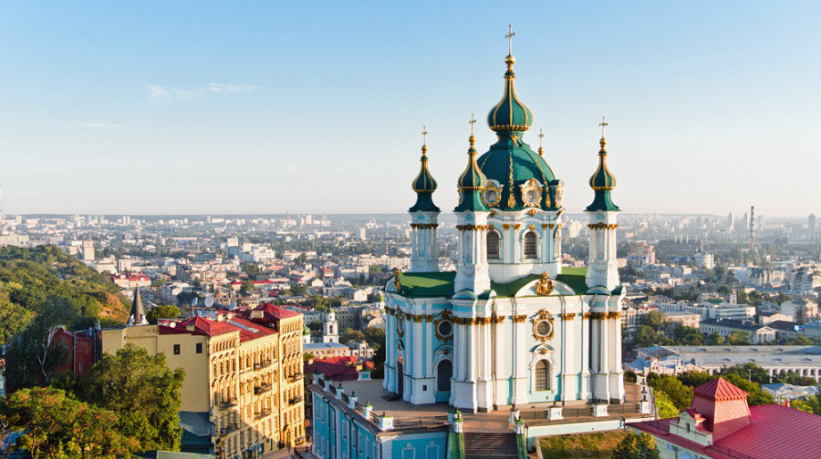

| Україна | Область | Вікторина | дякую за увагу, любі друзі, чекаємо вас на нашому сайті!!!!!!!!!Всього найкращого |
Київська областьНайстаріша область Північної України, утворена в 1932 р. Клімат помірно континентальний, м'який, з тривалою порівняно теплою зимою і теплим, вологим літом. Дніпро - головна ріка України - ділить область і всю краіну на право- і лівобережну частини. | Історія Перші поселення на Київщині з'явилися в пізньому палеоліті (20-15 тис. років тозу). Хліборобсько-скотарські племена мідного віку (VI-III тис. до н. е.) залишили по собі археологічні пам'ятки трипільської культури. В області відомі понад 120 поселень та курганних могильників доби бронза (II-I тис. до н.е.) і близько 90 археологічних пам'яток скіфського часу (VII-III ст. до н. е.). 3 появою племінних об'єднань"князівств найбільш впливове утворилося у полян, яке згодом стало тим центром, навколо якого в IX-XII ст. сформувалася могутня держава - Київська Русь. На території сучасної області в цей період існували сотні поселень, швидко розвивалася економіка, торгівля і культура. Потім ці землі переходять під контроль Литви, а після Люблінської унії 1569 р. - Речі Посполитої. Завдяки Визвольній війні українського народу під проводом Б. Хмельницького більша частина області позбувається польського панування i тут запроваджується новий полковий адміністративно-територіальний устрій. Київська губернія займала значно більшу територію, ніж нинішня область. Після Жовтневої революції в Росії в 1918 р. у Києві була здійснена невдала спроба створити незалежну українську державу. Під час Великої Вітчизняної війни в 1941-1943 рр. область була окупована фашистською Німеччиною. На території Київської області збереглися різностильові православні і католицькі культові споруди XVII-XX ст. Серед архітектурних пам'яток, що дійшли до наших днів, будівлі цивільного призначення займають менш значне місце. Вони представлені палацами, адміністративними будинками, парковими спорудами, меморіальними комплексами та пам'ятками XVIII-XX ст. Київська губернія займала значно більшу територію, ніж нинішня область. Після Жовтневої революції в Росії в 1918 р. у Києві була здійснена невдала спроба створити незалежну українську державу. Під час Великої Вітчизняної війни в 1941-1943 рр. область була окупована фашистською Німеччиною. На території Київської області збереглися різностильові православні і католицькі культові споруди XVII-XX ст. Серед архітектурних пам'яток, що дійшли до наших днів, будівлі цивільного призначення займають менш значне місце. Вони представлені палацами, адміністративними будинками, парковими спорудами, меморіальними комплексами та пам'ятками XVIII-XX ст. |
Вишиванка На Київщині вишивали дрібні геометричні і рослинні мотиви: зірки, квіти, виноградні грона. Для жіночих сорочок обирали червоні, жовті, сині кольори, підкреслені чорним. Київська вишивка була контрастною - на білому полотні рясніли насичені кольори червоно-чорних узорів. Ажурні мережки використовувал і на жіночих і чоловічих сорочках. З часом більш поширеними ставали квіткові орнаменти. |
Особливості мови Майже все населення області спілкується виключно українською мовою, а саме 93%. В наслідок цього, в даному регіоні виникли деякі діалекти: жалива - кропива; товар - худоба; хвища - сильний дощ; вагани - ночви; кура - заметіль; кабиця - літня піч. |
Столиця України Київ - столиця України, головний політичний, соціально- економічний, транспортний та науковий центр країни. Є окремою адміністративно- територіальною одиницею, не входить до складу Київської області. В Києві знаходяться центральні органи влади України, більшість посольств іноземних держав, центральні офіси більшості підприємств та громадських об'єднань, що працюють в Україні. |